My corpus will consist of two familiar faces for any fan of modern Hip Hop: Kanye West and Drake.
In this corpus, I am interested in exploring their careers from their first albums up to 2016. The way I see it, these two artists were at their most influential during this time period. Understanding how they sounded from the beginning, and how they changed over time, may provide an insight into how later generations of rappers found their inspiration. Both of these artists have dramatically shifted their sounds over the years, and it would be wrong to think that any artists they influenced did not have specific albums of theirs that mattered most. So, uncovering how their albums differed from one another can help highlight what made each of their eras so special.
Kanye West had a massive influence on the next generation of artists such as Travis Scott, Future, Tyler The Creator, and Young Thug. He pulled hip hop away from the gangster rap that dominated it, embodied by artists like 50 cent, DMX, and Dr. Dre.
His albums during this time of 2004-2016 consist of:
The College Dropout (2004)
Late Registration (2005)
Graduation (2007)
808s & Heartbreak (2008)
My Beautiful Dark Twisted Fantasy (2010)
Watch The Throne (With Jay Z) (2011)
Yeezus (2013)
Ye (2016)
His first three albums all embodied the classic backpack rap Kanye era, while 808s was a drastic departure from all sounds prior and after. MBDTF is often referred to as his ‘magnum opus’, being his most maximalist music in terms of production quality and amount of unique features and samples per song. Yeezus was a fusion of industrial techno and hip hop, and Ye marks the beginning of his much more religious years, invoking lots of Christian imagery and heavily using gospel samples or gospel themes (although there are still PLENTY of non-Christian themes in this album).
What has always separated Kanye from other artists has been his own control over the actual production of his tracks and his knack for splitting away from traditional rap structures and greatly borrowing from other music scenes. This was in fact what made him notable in the first place, as his heavy use of samples from soul music was unlike anything seen in the gangster rap scene he was surrounded by when he first emerged onto the scene. This knack for experimentation and instrumental-focused rap music has always made him stand out musically in hip hop.
Drake broke out onto the scene 5 years after Kanye, but his rise was just as dominant and unusual as Kanye’s. He merged the backpack rap of Kanye’s early albums and the introspection of Kanye’s “808s & Heartbreak” with pop elements and a incredibly moody tone. When looking at who Kanye influenced, realistically, the first answer should always be Drake. However, as they competed and grew, they both changed dramatically. He was one of the first to be a rapper and a singer simultaneously, and we’re not talking Kanye West singing through autotune on “808s”. He could play both sides of the exchange, making “every song sound like Drake featuring Drake” (from 5am in Calabasas).
His albums during this time of 2009-2016 consist of:
So Far Gone (2009)
Thank Me Later (2010)
Take Care (2011)
Nothing Was The Same (2013)
If You’re Reading This It’s Too Late (2015)
What A Time To Be Alive (with Future) (2015)
Views (2016)
Drake’s first two albums were earnest, sad, but also had a heavy blend of pop and R&B. These albums feel less coherent than later projects, featuring a number of producers and feeling less mature than his later work. In truth, the albums were quite rushed, leading him to his next project, “Take Care”, which, as the name states, he spent significantly more time on. This album cemented his moody, underwater sound, owing much credit to his long term partnership with his producer Noah “40” Shebib which was truly established during “Take Care”. “Nothing Was The Same” marks Drake’s foray into harder hitting tracks, with his rap music getting increasingly braggadocious and militant, while his R&B tracks shifted from sad and moody to, for lack of a better word, sexy. “If You’re Reading This It’s Too Late” and “What A Time To Be Alive” continue his dark mood and really amp up the aggression in his music, with the former literally being a surprise diss track to his entire label in order to escape from his contract. “Views” sees Drake come to a more chilled out styling, less downright sad and more laid back, although not necessarily happy. It also sees Drake bring in a myriad of new collaborations that expand his genre capabilities, particularly with the large amount of Caribbean influence brought in.
While Drake’s production was never as genre-bending as Kanye’s his blend of styles, from rap to R&B to pop, has made him a relatively unpredictable talent. However, his focus on melodic rap and somber soundscapes has certainly influenced many, such as The Weeknd, Tory Lanez, Post Malone, and PARTYNEXTDOOR.
Given that I am studying change over time, the track-level features from spotify are critically important. In the charts below, I have Drake and Kanye West plotted against each other: Kanye is in orange and Drake is in blue.
Make sure to scroll down! There is lots to see here.
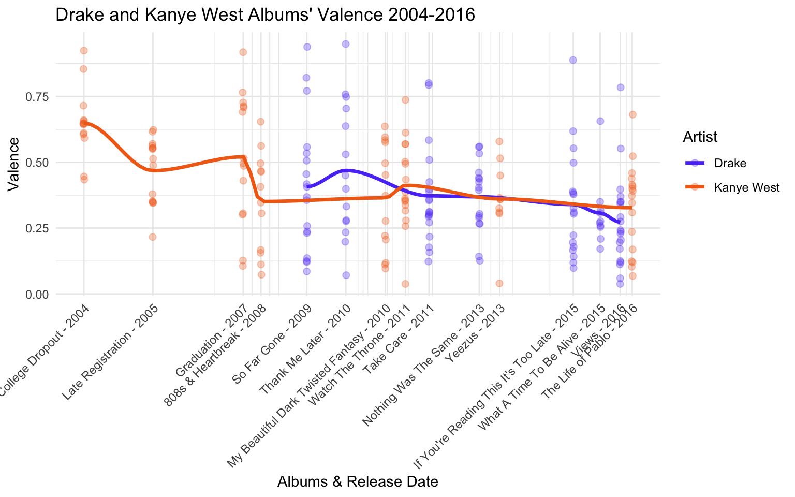
Kanye’s Valence went down over time, but the majority of his drop happened between 2004-2008. Drake’s Valence also went down over time, falling at an ever-so-slightly faster rate than Kanye through the same time period, although not by very much, especially when comparing first album to final album in this 2004-2016 time period.
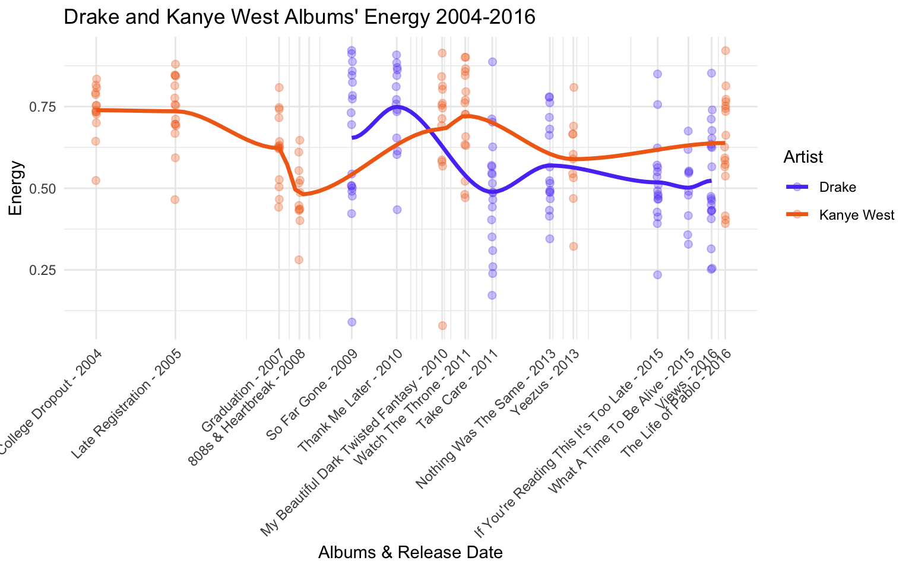
Kanye experienced a notable drop in Energy during his Graduation and 808s & Heartbreak era. The name 808s and Heartbreak probably gives you a clue as to why. He rebounded back to nearly his previous energy by the time he released My Beautiful Dark Twisted Fantasy two years later. Drake started off higher energy in his freshman and sophomore albums, but mellowed out drastically from Take Care onwards.
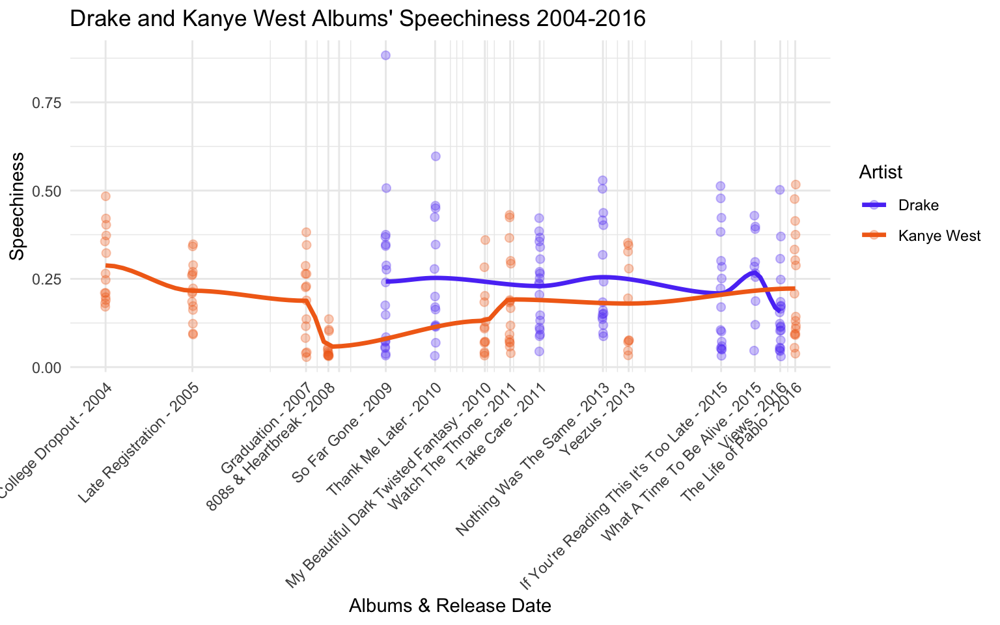
Just like with Energy, Kanye’s Speechiness takes a considerable hit around 808s & Heartbreak, before rebounding as time goes on. Drake’s speechiness remained steady, starting off around the same level as Kanye in 2004 and staying higher than him up until 2015. I’m not surprised at Drake’s relatively low Speechiness despite being a rapper, given his heavy involvement with R&B and Pop music as well. However, Kanye being often lower than Drake is quite a surprise to me. Especially albums like Watch The Throne, a collab album between Kanye and Jay-Z, and My Beautiful Dark Twisted Family’s bragadocious, sample heavy hip-hop style surprised me as not registering as more speechy than Drake’s Take Care, which features a significant number of R&B songs.
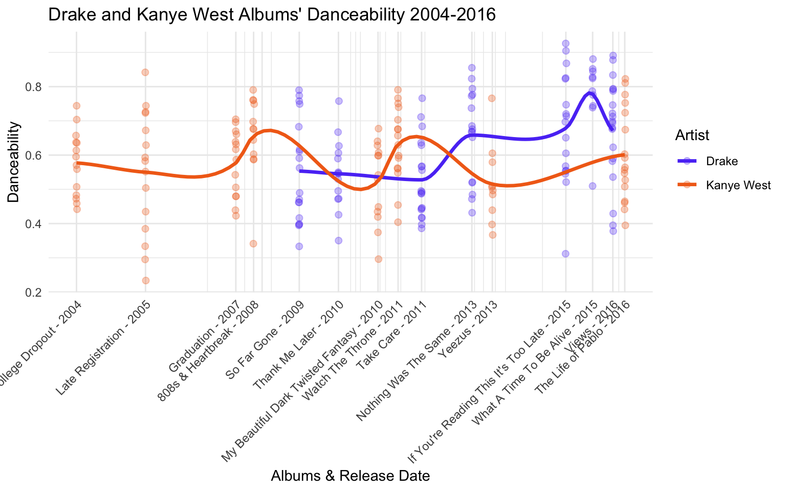
Danceability is a weird one, because for both artists, it has a mostly inverse relationship with Energy. Drake spikes in Danceability in his album What A Time To Be Alive, although I think anyone familiar with the album would not consider it to be where to look if you want to dance to Drake. Drake does peak at a notably higher Danceability score than Kanye, which I did expect, but I didn’t expect it from this specific album. Kanye bumps up a bit during 808s and again on Watch The Throne, and the former definitely surprises me. The sad atmosphere of 808s doesn’t bring much dancing potential (in my opinion) outside of the song Love Lockdown, otherwise being quite sorrowful in lyrical content and instrumental atmosphere (although lyrical content obviously does not play a role in Spotify’s Danceability metric). Watch The Throne’s high energy and exciting drumming doesn’t surprise me as a danceable album, though.
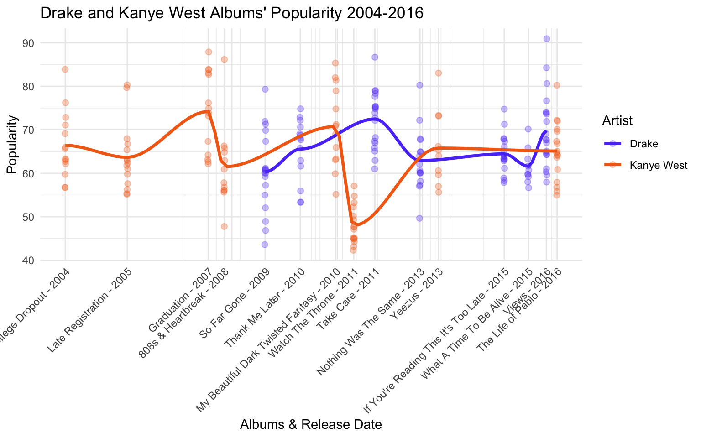
I thought popularity may chart some interesting correlations with other features, but it didn’t catch much. It got the obvious; 808s is once again unusual, in that it is more popular than everything before and after it, especially after. For Drake, his popularity seems to go inverse proportional to his Danceability, initially rising as his music became less Danceable and falling down when Danceability increased.
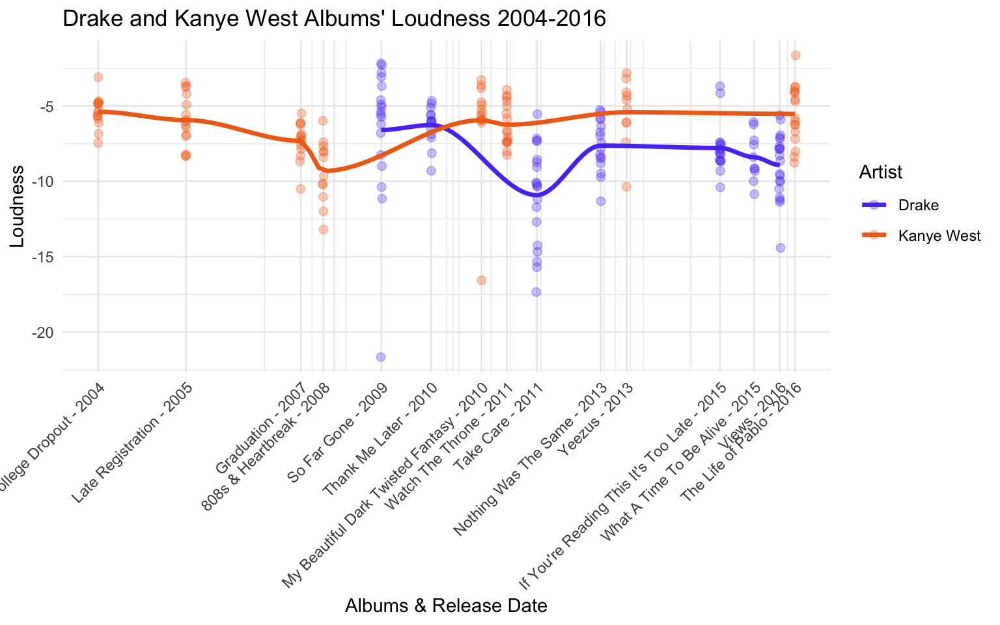
Loudness is perhaps the simplest of all these features in the analysis. The two albums that are by far the most somber, for both artists, are the quietest. These are “808s & Heartbreak” for Kanye and “Take Care” for Drake. They tend to feature much softer sounds, of course, but also lack drums for a number of the songs, choosing instead to rely on smooth synth sounds and their own voices, without anything to pump up the energy or create spikes in volume. Otherwise, loudness for their music is what you would expect. It is industry standard, generally mastered quite loud, as most popular music is.
For both of these artists, across these features, and especially Valence and Danceability, track level features from Spotify seem to suffer greatly from the sheer breadth of scores they get. They don’t just have one outlier per album, but often numerous, in both high and low scores. I would argue that there tends to be more variation within albums rather than across albums (aside from 808s, the obvious unusual album in this dataset). Just by looking at the albums in the Valence chart, you can see that Drake’s So Far Gone, Thank Me Later, and If You’re Reading This It’s Too Late, alongside Kanye’s Graduation, My Beautiful Dark Twisted Family, and Watch The Throne really do not resemble the lines that trace through them, being as varied as one would expect noisy data to be, not structured albums.
Click below to see my thoughts on Instrumentalness… if you dare.
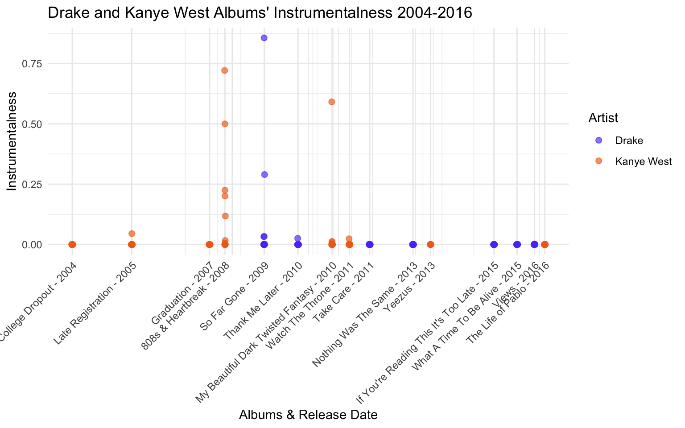
Really, Instrumentalness is more a test of Spotify’s features than it is of Drake and Kanye’s catalogue, but it seemed interesting. The 4 most notable outliers, in order, are Drake’s Outro and Kanye’s Welcome to Heartbreak, All of the Lights Interlude, and Love Lockdown. Of these, Spotify scores 2 for 4. Outro and Kanye’s interlude are indeed both instrumental, and while 808s as a whole is a much more instrumental album than much of Kanye’s catalogue, Love Lockdown and Welcome to Heartbreak are very obviously featuring vocals. These two songs, like much of the album, are extremely autotuned (even for late 2000s standards) and significantly compressed beyond what one might expect for a voice, even to the point of extreme distortion.
In the case of Love Lockdown, which spotify scored as an 0.5, meaning it is split down the middle between classifying it as instrumental or not, I have a hypothesis (and not an answer, because Spotify does not provide enough information): Love Lockdown features a far greater amount of Ooh and Aah sounds in its lyrics than most songs, with Kanye sustains these syllables for long periods. According to Spotify’s feature documentation, “‘Ooh’ and ‘Aah’ sounds are treated as instrumental” for this feature (https://developer.spotify.com/documentation/web-api/reference/get-audio-features). The vocals are also ridiculously autotuned and compressed, although that does share a greater similarity with this album as a whole. Regardless, pushing the human voice towards instrumnent-like qualities (unnatural pitch stability, unusual transient and overtone information from compression and distortion) is unlikely to be helpful for Spotify’s algorithms.
This song has two mostly instrumental sections, 0:00-0:07 and ~3:35-end, although that even that second section is dubious (I’ll get to that in a bit). For every other moment in the song, Kanye is singing, and he’s not hiding. But these are the lyrics from the first verse:
I’m not loving you way I wanted to What I had to do, had to run from you I’m in love with you, but the vibe is wrong And that haunted me all the way home So you never know, never, never know Never know enough ’til it’s over love ’Til we lose control, system overload Screaming, “No, no, no, n-no” I’m not loving you way I wanted to See, I wanna move, but can’t escape from you So I keep it low, keep a secret code So everybody else don’t have to know (Pulled from Genius @ https://genius.com/Kanye-west-love-lockdown-lyrics)
This verse repeats three times with some variance in words, but Kanye is always landing on an Ooh or a slight Oh sound, holding it for longer than any other syllable. Other words are all spoken significantly faster, making these syllables a distinct part of the sound of the verses.
The chorus is similarly focused on one syllable, which sounds very much like an Aah, even though the words aren’t typical for these words:
So keep your love lockdown, your love lockdown Keeping your love lockdown, your love lockdown Now keep your love lockdown, your love lockdown Now keep your love lockdown, you lose
His pronounciation of “love” and “down” are particularly Aah sounding (which happen to be the most held syllables in the chorus), and the EQ, by my ears, really cuts most of the weight of Kanye’s voice as well as the air, opting for the upper mids during chorus sections. They sound bandpassed, cutting the highs and lows and sharpening wherever the center frequency, which is exactly what a Wah guitar pedal does to the frequency spectrum.
Coming back to the instrumental section at ~3:35, it is only instrumental until Kanye starts screaming in the most distant, autotuned, distorted, likely pitch & formant shifted tone. Its such a weird tone that its entirely possible the Spotify feature algorithm isn’t even picking it up as formants belonging to a human voice. If it is picking them up, its definitely hearing an Aah. Across this whole song, the most notable formants, when they are present, are by far Oohs and Aahs, and the unnatural pitch stability of extreme autotune + heavy compression create a sound that is still identifiable as the human voice to human ears, but perhaps escapes much of what Spotify’s algorithm looks for.
This definitely leaves me with some curiosity about what else it is that makes Kanye’s voice on this track still obviously human, while a computer seems to have great difficulty coming to the same conclusion. Obviously, the human ear is just better at identifying individual components to a blended sound, such as knowing the clear difference between a flute and saxophone, or being able to lock onto one specific violin even if two are in front of you playing the exact same melody. If I were to make a guess, I would think that rhythmic patterns of the human voice also play a part in human understanding of these vocal sounds - even though transients from the T in “to” or the S in “so” are quite squashed in the compression, they aren’t invisible, and I would imagine that our innate strength towards pattern recognition would cause the human mind to in fill in missing spectral information. For example, hearing the sound of an s, which is usually not held for long periods of times and functions somewhat like a transient, would perhaps lead the human brain to expect a vowel sound afterwards, and so even if that vowel sound is EQ’d out of existence or heavily compressed, we may search to hear that human-like vowel quality where it isn’t very present. A computer model, in contrast may only be trained on specific formant ranges to indicate a human voice(especially one just checking for a human voice, not transcribing lyrics, i.e. spotify’s Instrumentalness) and not be trained for pattern recognition of specific sequences of spectral information (especially given the forever limitation of spectral resolution vs. time resolution in a DFT, which may make recognition of these spectral patterns even harder for computers).
I hope this was as interesting a read as it was for me to think about. It unfortunately doesn’t tell me anything about Drake or Kanye West.
Drake’s album “If You’re Reading This It’s Too Late” was released in 2015 with no buildup, no advertising, largely as a surprise to both his fans and his label, the latter of which he took numerous direct shots at in this album. This is a critical album in his discography, pulling him away from introspective Hip Hop and pop hits towards dark, moody trap.
Below, I have put together a chart that illustrates what my random forest trained on this album believes are the most important spotify features for clustering.
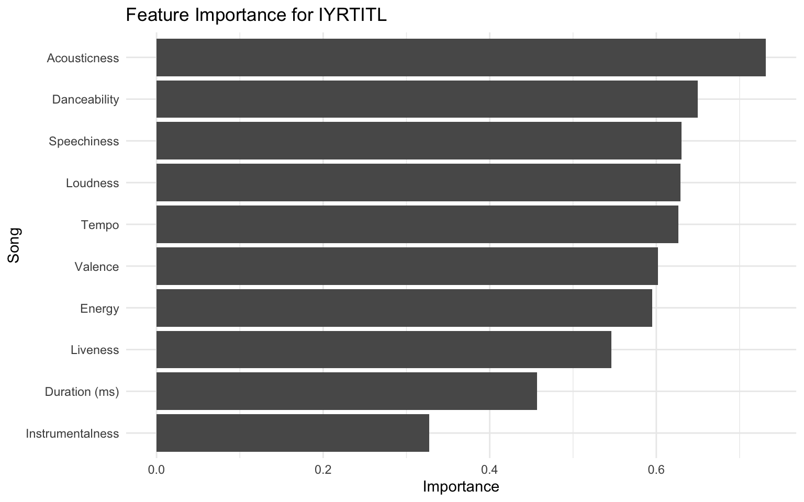
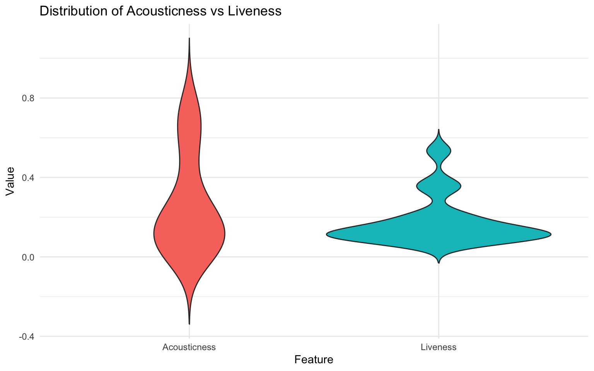
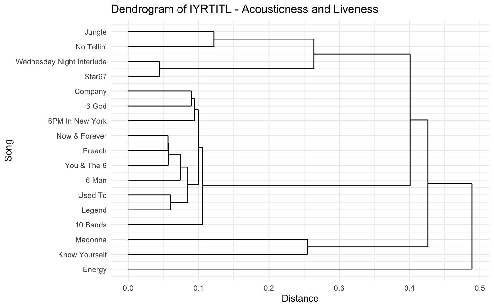
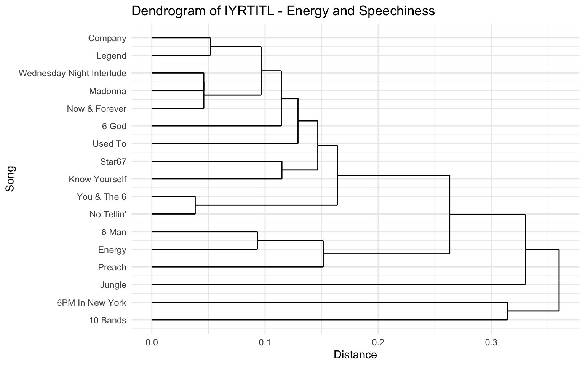
This chart has most features at a pretty high level, and if one were to look purely at the Spotify feature data, it would make sense; the Distributions tab has a simple plot that illustrate the distribution of values within “Acousticness” and “Energy”.
You can clearly see that this album has a lot of variance in “Acousticness” and a decent amount in “Liveness”. However, upon listening to the album, it is very clear that almost none of the sounds are acoustic, and there are no live performances. What is present in the songs with high values in these features, though, are short sample recordings of conversations between Drake and his friends. This has led Spotify to categorize certain songs as much more live and acoustic than others, and subsequently mislead my random forest algorithm to believe that it is a good measure of similarity between tracks, despite many of those “similar” tracks being so incredibly different beyond the conversation samples.
Cluster #1 and Cluster #2 illustrate the difference between different sets of features. The first shows Acousticness and Liveness, while the latter shows Energy and Speechiness. Energy and Speechiness both rank below Acousticness according to my feature importance graph, and Valence is lower than Liveness. However, these features lead to both a cleaner dendrogram and certainly offer a more reasonable estimation of song similarity than the other two features.
For anyone who knows the album well, putting Jungle and No Tellin’ or 6pm in New York and Company anywhere near each other really makes no sense, and so, fine tuning Spotify’s features to suit a clustering algorithm, at least for this album, clearly requires some personal knowledge of the dataset at hand.
In this section, I will analyze 4 songs, 2 by Kanye and 2 by Drake. They both feature an older song of theirs and then a song that came later, although in both cases the time difference in release dates for each artists’ set of songs is less than 3 years.
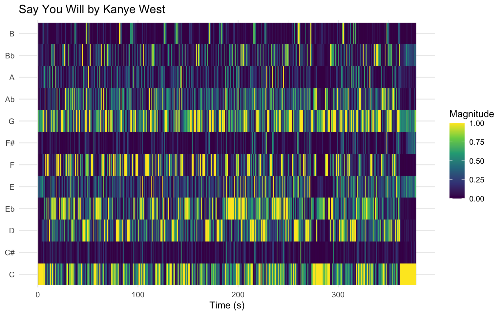
“Say You Will” by Kanye West (808s & Heartbreak, 2008) is highly minimalist compared to much of his other music. It drones on a C minor chord for much of the track, with the same drums playing throughout without variation. The graph shows quite clearly that we are in the key of C, and although both E and Eb are present in the chromagram, the song is certainly in C minor. The presence of E and the particularly heavy presence of G are both likely thanks to the overtones coming from the instrumental, which is mostly a mix of a choir synthesizer, string synthesizer, and piano.
Looking at this chromagram, it doesn’t seem super clear what is going on despite how minimalist the track’s production is. However, if you look at the section between about 270 and 295 seconds, the messiness of the chromagram makes sense.
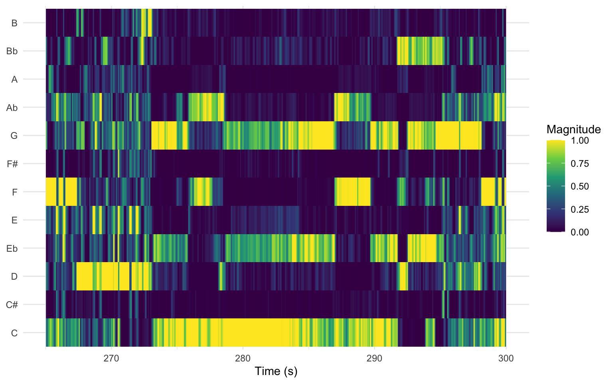
In this section, the drums and vocals completely disappear. While a lack of Kanye’s voice is certainly important, I believe the removal of drums is particularly telling. In this song, the drums are only a pitched tom and a synthesized and pitched “boop sound” that functions like a snare. These drums bring in pitched content, and most definitely have powerful overtones of themselves. If these drums were very inharmonic, like a snare or hihat, they would smear across the frequency spectrum and likely cover all of the notes in a chromagram, although with very little magnitude. However, as these drums are pitched, they have harmonics that correlate to their pitches, smearing across less of the frequency spectrum but resonating with specific pitches far more. When you look at the parts of the chart that do have drums, you can see pretty clearly that C#, F#, A, and B contain the least magnitude. The only note outside of the key with significant energy is E, which is the 5th harmonic of C. When A and F# have a small power spike at around 270, those are directly correlated to the increased power of D, as they are the 3rd and 5th harmonic respectively.
The tl;dr takeaway? The chromagram unfortunately does a poor job at replicating the simplicity of the track, largely because of the pitched drums and their overtones. When the drums drop out of the mix, you see the true simplicity of the track: it’s basically 3 chords that revolve around holding a C drone, with a single chord progression lasting an absurd 20 seconds from 275-295. This is a seriously low amount of harmonic variability for any song that lasts 6 and a half minutes.
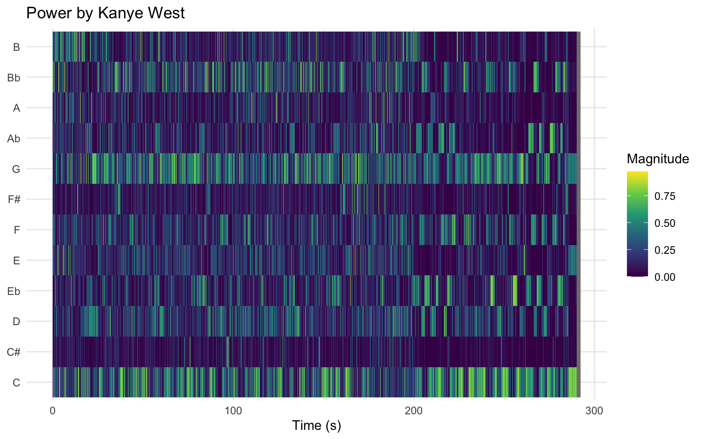
“Power” by Kanye West (My Beautiful Dark Twisted Fantasy, 2010) is super smudged all over the chroma gram, but you can get a couple insights:
Generally not super harmonic - drums play consistently and samples play intermittently to build a rich texture, but chords and notes are never held. Consistent energy in Bb, G, and C reflects the “OhhUh” and “Ayyyyay” samples.
Big switch up around 200 reflects the synthesizer instrumental section, where the drums are significantly held back. Smearing disappears as well. In a sense, this song has a bit of a “drone” like Say You Will, but in that the vocal samples function as a drone (continually repeated, not varied in their performance aside from removal), but in this song other ear candy is constantly sprinkled in with different melodies at different points. More maximalist, very reflective of this album.
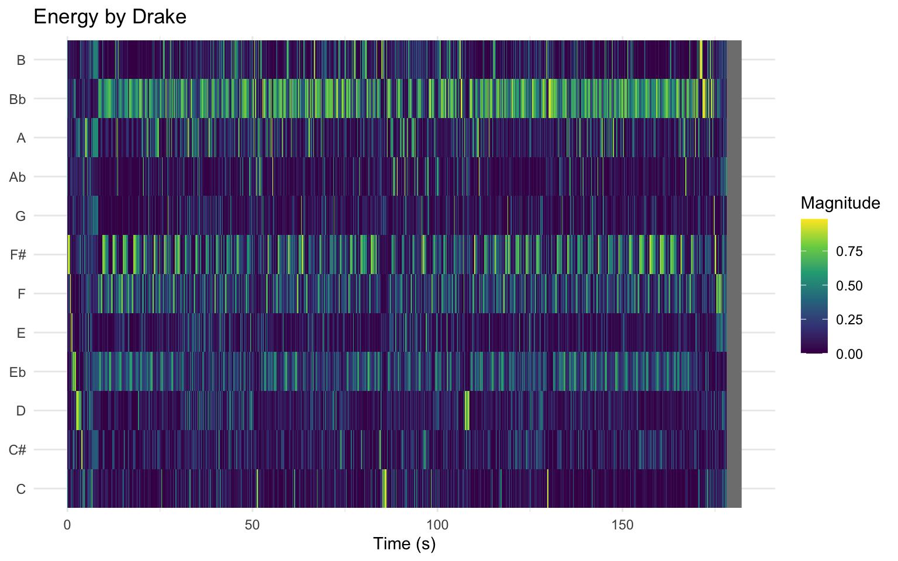
“Energy” by Drake (If You’re Reading This It’s Too Late, 2015) is interesting, because it has quite little pitch information. The very beginning, on the left, is all over the place, as it starts with a vocal sample of a different person before cutting to the actual beat of the song.
This song is all based off a single melodic motif, but through filtering, changing the balance of instruments, and huge energy fluctuations in the drums, it still experiences large mood swings. The only notable moment where the consistent Bb gets broken up a is around 80 seconds, which corresponds to Drake holding onto specific words for extended periods of time, altering the balance of pitches.
You can see very clearly on this chromagram when the drums get intense. Around 30 or 35 seconds, and again around 80 seconds, the drums come in and the hi hats in particular get very intense in the mix. This obscures a lot of the Eb information, and smears pitch information on a number of otherwise unused pitch classes, such as E and D.
This piece has a particularly growly bass and the instrumentals are otherwise low-passed very heavily, and I think this particularly limits how large of a magnitude all the pitch classes other than Bb (the bass pitch throughout the whole song) experience in this chromagram. In a sense, you can see how the chromagram represents heavy low pass filtering through this song.
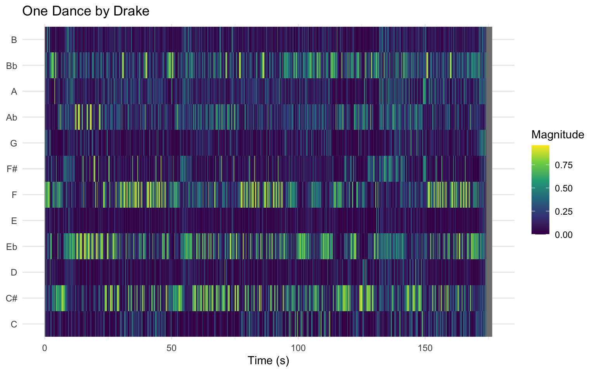
Unlike many other Drake songs in this corpus, “One Dance” by Drake (Views, 2016) has consistent drums that are not low-passed at all. There is consistent snare and hit hat information, and you can clearly see all the smearing their frequency content does to this chromagram.
The main prominent bands of C#, Eb, F, Bb, and Ab are related to the piano thats playing throughout the song. You can hear this around 110 seconds, where everything drops out aside from the main piano riff, and a female vocal comes in for about 20 seconds. While this section is going on, all the smearing goes away on the chromagram and just those main pitches shine through, highlighting their correlation to the piano.
These songs below all feature MFCC charts and self-similarity matrices. While timbre features are generally very hard to understand by themselves, they offer a great visualization of track structure, especially for Drake and Kanye West, as harmonic information tends to change less in their music compared to timbral changes in the beat. This will be explored below.
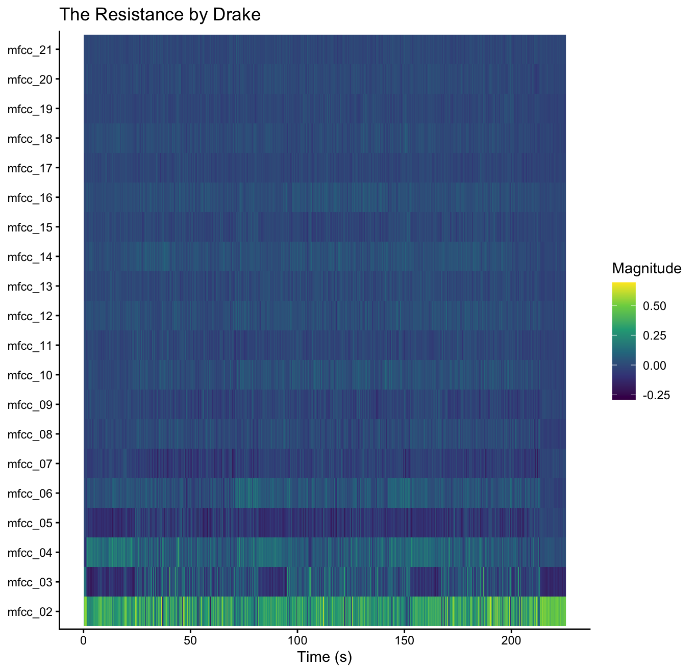
Looking at “The Resistance” by Drake (So Far Gone, 2009), you can see that repeating sections in the SSM below correspond to some notable changes in MFCC_02 and MFCC_03, such as around 75 seconds and 150 seconds. In the song, this corresponds to when Drake switches from rapping a verse to singing the pre-chorus and chorus. This song is obviously pretty simple, based on the SSM. However, the verse sections (most of the green) seem to look dissimilar to each other in this song, even though they really do not differ a ton as you listen. I am not sure what is making the algorithm see it differently.
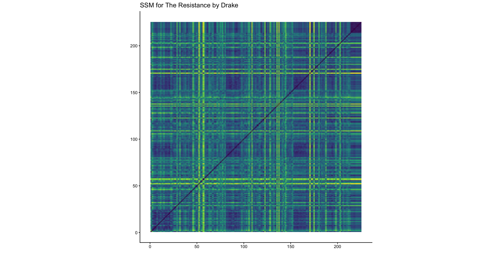
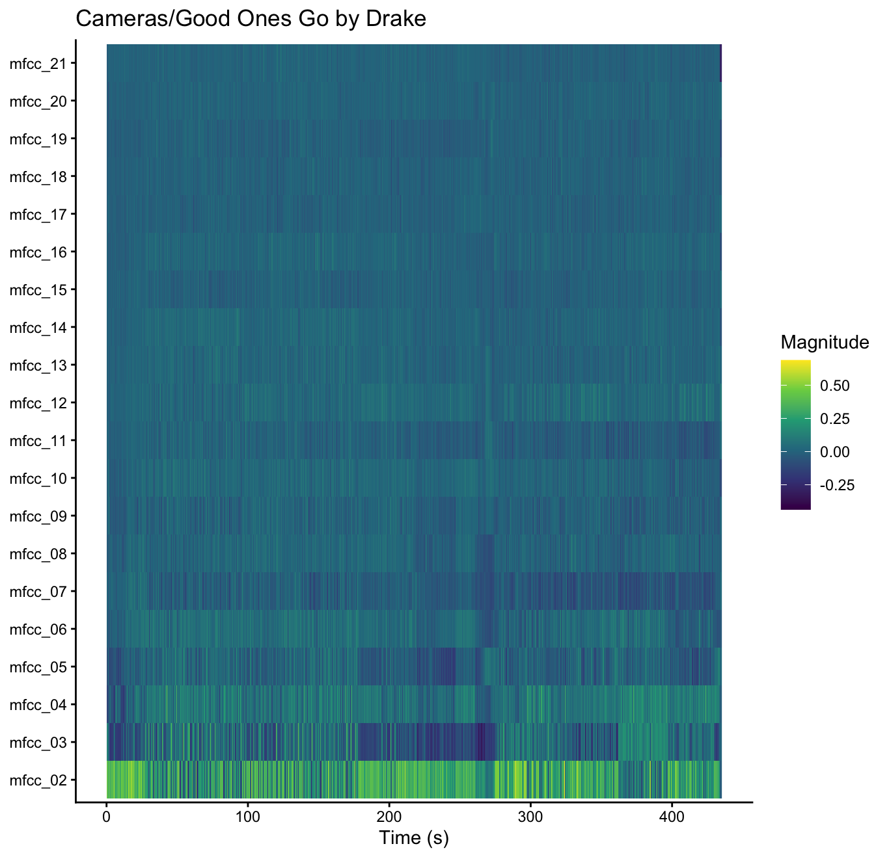
The MFCC chart and SSM for “Cameras/Good Ones Go Interlude” by Drake (Take Care, 2011) are almost exactly what I expected. “Take Care”, the album this song is from, was a departure from Drake’s first two mixtapes, which were quite rushed (although very popular), were followed by “Take Care”, being the album he took a lot more care to create. This song is effectively two in one, with a long transition period, represented by the big blue square in the middle. Meanwhile, the lattice structure in the bottom left represents a number of verses that get intersected by small instrumental sections.
In the MFCC chart, MFCC_03 gets notably dark during the transition period. This section is where Drake’s voice leaves the track for over a minute, which would make sense given that much of the MFCCs have to do with vocals, except that the instrumentals for this song are heavily built around samples of people singing. This leaves me a little uncertain as to why MFCC 3 so prominently drops out in this section.
What seems to correlate the most to changes in the SSM is not actually whether Drake’s voice is present or not, but rather the drums. The lattice structure in the bottom left has small dark squares of similarity at each instrumental break, except the moment the drums come back in during the break (but Drake’s voice has not yet returned) is when it starts to switch from being a green grid line to becoming an inner square of the checkerboard again.
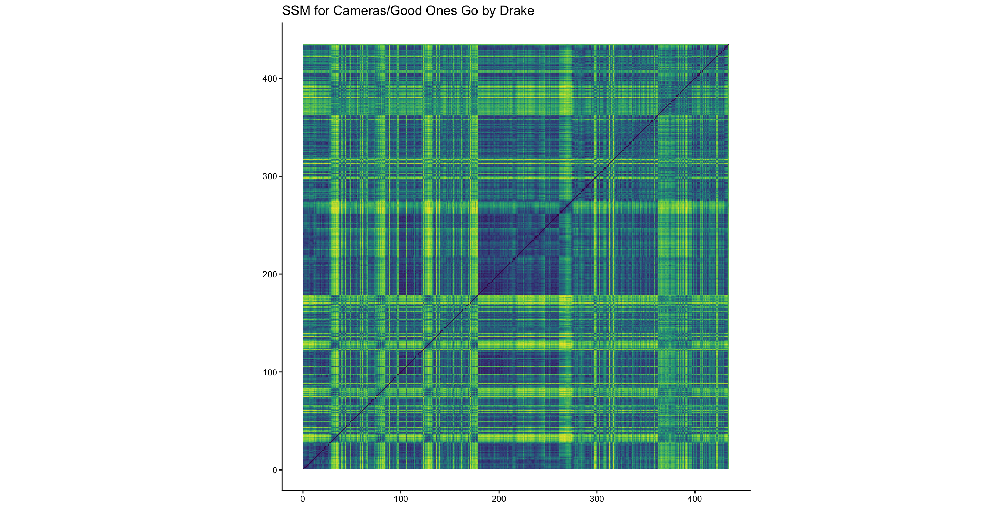
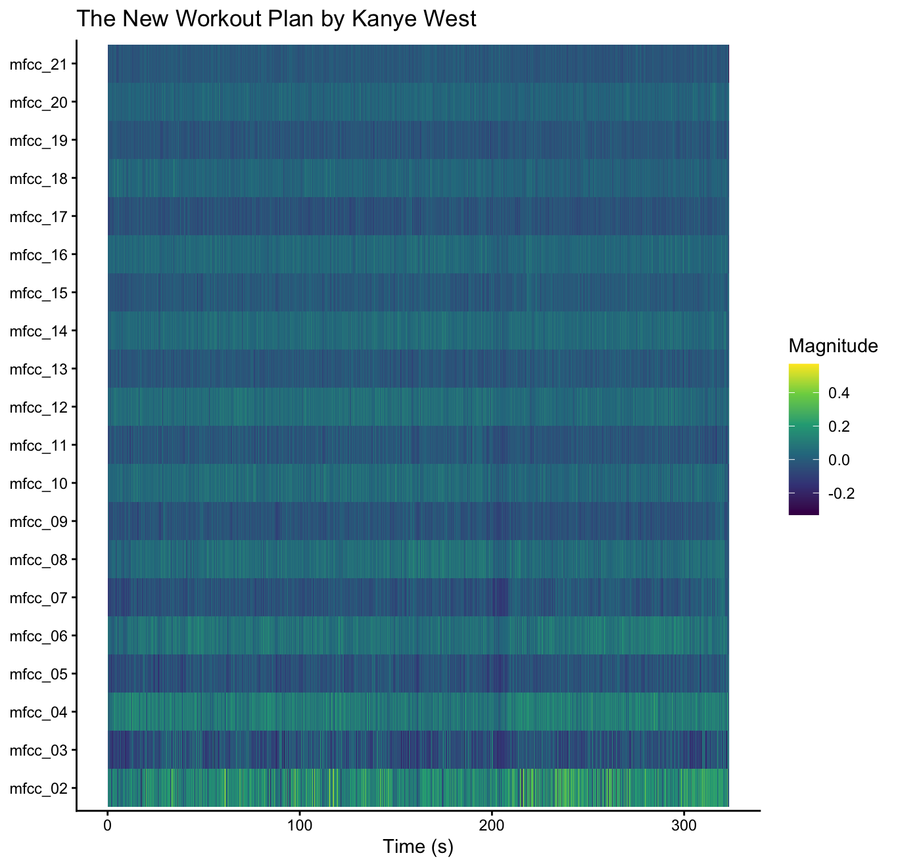
“The New Workout Plan” (The College Dropout, 2004) is an incredibly busy, weird track by Kanye, although its certainly not experimental or hard to follow. Honestly, the MFCC chart captures nothing of interest, unfortunately, and the SSM isn’t much better. The fact that the SSM shows almost no change at 210 seconds is shocking: the entire beat changes, the tempo feel is completely new, the main voice becomes a Daft Punk-sounding robot, and the drums mostly consist of a simple kick and clapping compared to the ridiculously fast kick and hi hat of the first half.
Something that is painfully missed in a MFCC based analysis of any song is the lack of consideration for stereo fields. At 50 seconds, when the chorus comes in, the main change is not to the song’s individual parts, but the stereo image. The song becomes drastically wider, especially Kanye’s voice, as he is particularly de-correlated from the center. On the SSM, though? Nothing. The song honestly looks mostly through-composed, with no repeating sections or even obvious divisions between sections, despite how different the major parts really are.
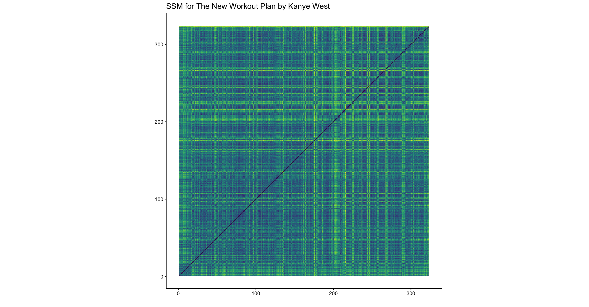
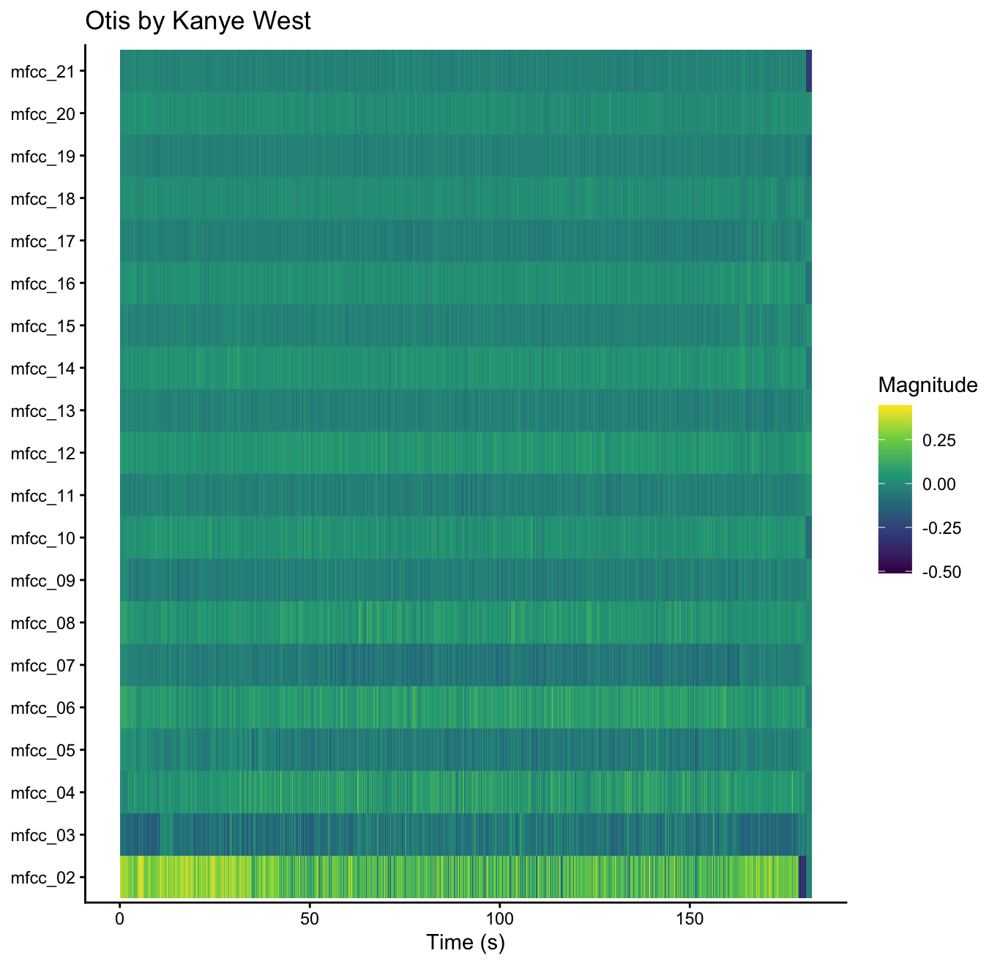
“Otis” by Kanye West (Watch The Throne, 2011) is an interesting one, and relatively succesfull. While the MFCC chart doesn’t show much, the SSM captures some important things. Considering this song is almost 100% built on a single sample, which plays out in full during the intro and then is chopped up for the rest of the song, the SSM depicts the intro quite well.
Almost all of the bright yellow lines perfectly correlate to the end of each phrase of the beat, where the sample speeds up, the drums intensify, and then eventually reset to the beginning of the phrase, which is much calmer.
The outer yellow ring looks like what you would expect if there was a big silence at the end of the song that was overrepresented. While I would argue that the ending definitely is overrepresented and probably hurts the accuracy of the SSM, it actually does make some sense. It is the only part of the song where, while the sample-based beat is still playing, its totally obscured by a woman screaming so loud that she seems to hit the limiter and destroy all the dynamics of other sounds in the mix in that final 10 seconds or so. As a consequence, the timbre of that section is seen by the algorithm as completely unusual for the track.
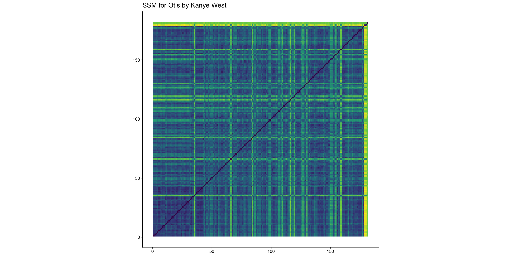
For my tempograms, I used exclusively autocorrelation methods, as they seem to visualize my songs better than fourier tempograms. However, as you will see below, even the autocorrelation tempograms struggled with my songs. The first card is of Kanye West songs, and the second card is of Drake songs.
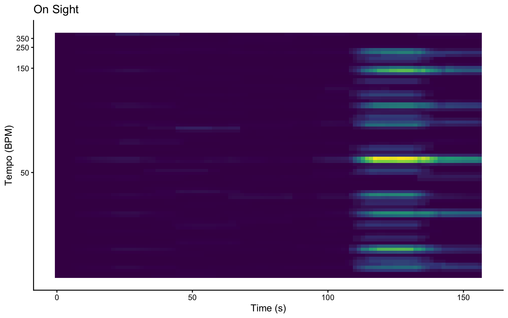
“On Sight” by Kanye West (Yeezus, 2013) is perhaps the weirdest one of all of my tempograms. It seems to catch almost nothing at all for the first two thirds of the song, despite this being by far the most clear part of the song rhythmically. It has clear drums, especially the hi hat, and a snare that always hits on beat 3. Granted, the synth pattern is weird.
The final third of the song is by far the least clear when you listen to it - it goes into an 8/8 time signature, where the pattern is sometimes 3-2-3, but at other times 2-3-3, and it really feels all over the place. The autocorrelation algorithm seemed to pick a number of tempos up… but far too many for it to be anything accurate. The strongest character it had was around 60 bpm, but that DEFINITELY is not the tempo.
Also, the middle third of the song is a choir sample with light drums underneath, at a totally different tempo than the rest of the track - nothing registered.
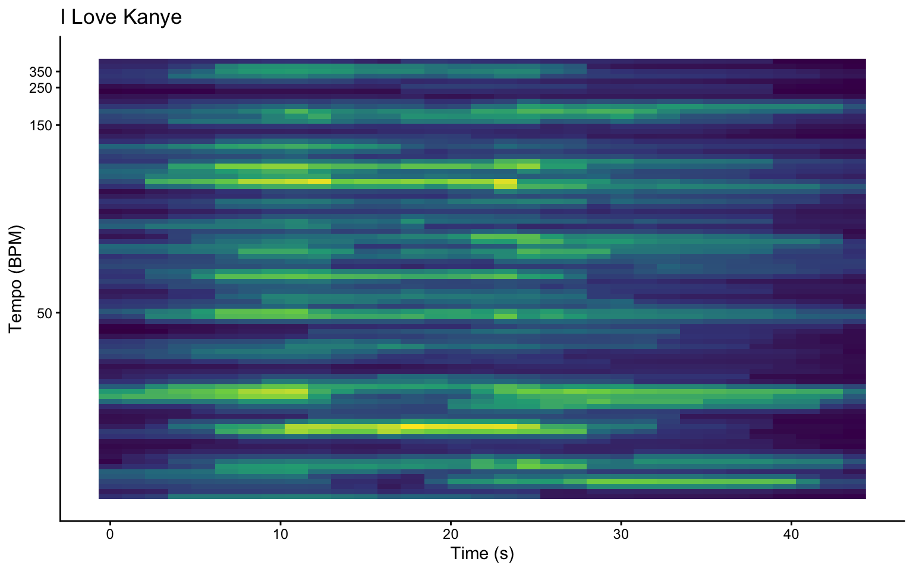
“I Love Kanye” by Kanye West (Ye, 2016) has a pretty failed tempogram - don’t worry, a success is coming.
This song is pretty interesting because it is literally just Kanye rapping. If anything, its a poem. But, it is very rhythmically rigid. The tempogram seems to be estimating about 100 bpm, as it shows lines around that area, as well as subharmonics of 50 and 25 bpm being present. This could potentially line up with the tempo he raps at, although it feels more like 120 to me.
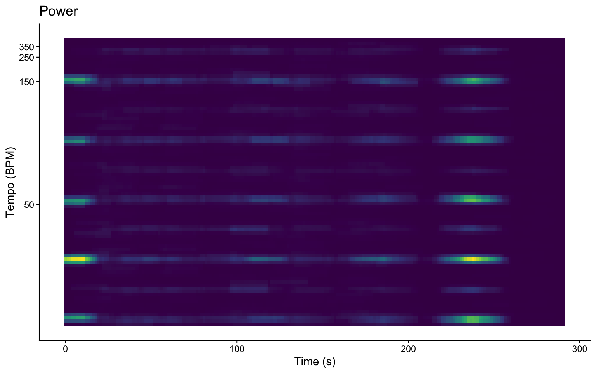
“Power” by Kanye West (My Beautiful Dark Twisted Fantasy, 2010) is the final Kanye tempogram here. Not much to say - it clearly caught a tempo. Given that it sits right on 150 and all the harmonics seem to be integer divided multiples of 150, (50 is 150/3, the line between them is thus likely to be 75 or 150/2, and continuing downwards) 150 is definitely the predicted tempo - quite fast for a Kanye song.
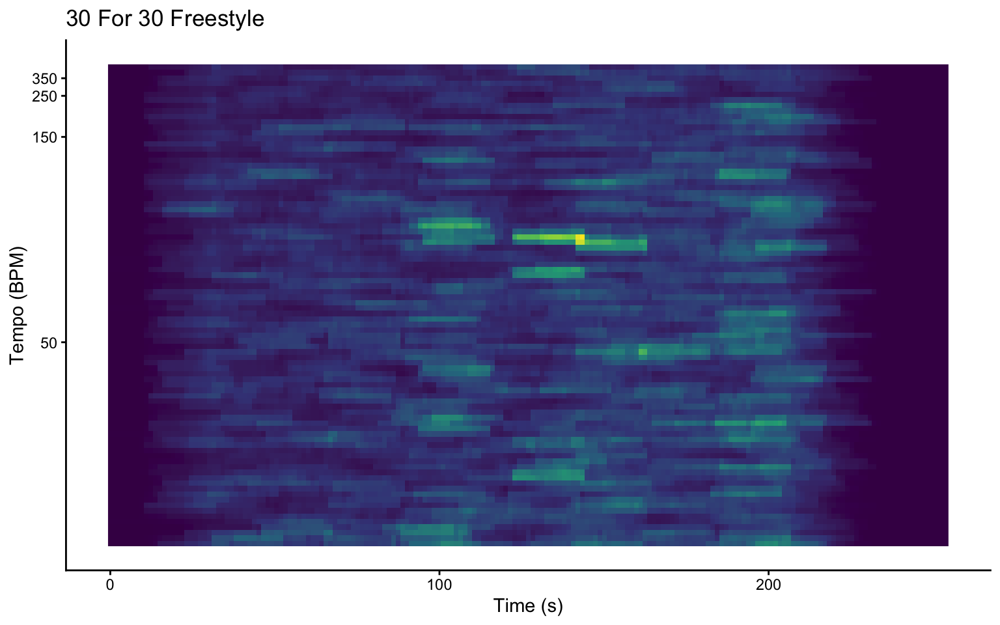
“30 for 30 Freestyle” (What A Time To Be Alive) is a classic introspective Drake outro. Its moody, slow, and the instrumental feels incredibly somber. Key to 40’s production style (Drake’s main producer) is heavy low pass filtering of everything, especially drums, and I think that’s why the tempogram is so lost.
Clearly, the novelty functions for this song are misplaced, and I assume its because of a lack of frequency information. The drums are constantly playing throughout the song and the tempo is very obvious, but with a lack of high frequency information (and actually a bit unusual for Drake songs, a lack of low end in the drums as well), the model couldn’t find anything strong to latch on to.
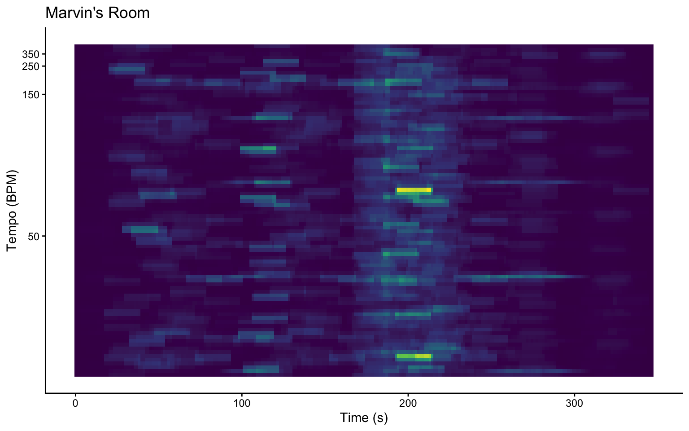
“Marvin’s Room” by Drake (Take Care, 2011) is another down-tempo Drake classic, having much of the same drum character as “30 For 30 Freestyle”, with heavy filtering done. However, there is a clear band at 200 where the tempogram is appearing to pick up on some kind of information, and I’m not sure what. This section is totally identical to whats happening 60 seconds prior. Its only around 220 seconds that a hi hat briefly enters - perhaps the model is trying to use that hi hat to relate its rhythm to whats happening prior to it?
This song is likely extra challenging for the model as all the drums are syncopated, aside from playing on beat 1. While the beat is very obvious for any human listener, there isn’t a single obvious quarter or eighth note rhythm at any point in the song.
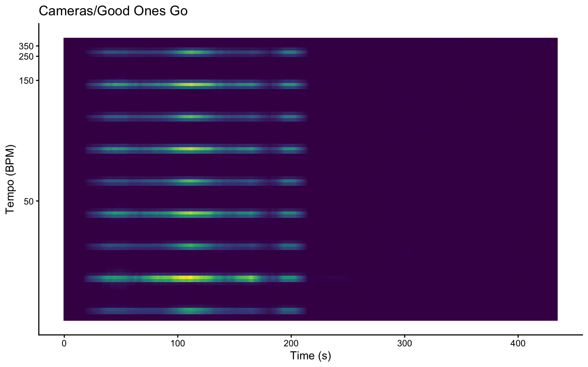
“Cameras/Good Ones Go Interlude” (Take Care, 2011) by Drake had some obvious success in its first half, finding a tempo, likely thanks to the clear drumming in this section. In the second half, which is a very smooth R&B track, the tempogram didn’t have the slightest clue. I think what doesn’t help, is that there is a clear triplet delay that plays after a number of the drum sounds during this section, while the drums otherwise have a lot of empty space.
I think one of the biggest challenges these three tracks have had, aside from the heavily filtered drums in some of them, is that none of them have melodic instruments with clear note onsets. They instead have lush synth pads, risers, and compressed vocals filling out the atmosphere, with Drake’s voice, and occasionally the drums, holding all of the tempo. I would imagine that the subtleties of the human voice in regards to tempo are a bit too challenging for the novelty functions to pick up on.
In some ways, I feel this corpus has ended up being more of a case study on MIR features than it has been a real answering to my original research question. Some of this, in my opinion, is just due to the nature of how this corpus project is necessarily done, as doing tempograms or chromagrams is naturally more interesting when you find unusual conclusions rather than simple, obvious answers. The obvious answers are only interesting when presented on large scales that show broader data trends, and doing just a couple chromagrams or SSMs just doesn’t allow for that possibility. Regardless, I think the failures I encountered were super interesting. Watching these methods fail has given me new insights into how they work, such as the super unexpected chromagram for “Say You Will” that I expected to be far simpler than it turned out.
The two broader conclusions I have come to are:
The variance within albums, at least by computational metrics and particularly by Spotify features, is far greater than the variance from album to album, and;
My predictions on how each album would align, in regards to the other albums released by the same artist, were generally wrong, at least, again, by computational metrics and Spotify features.
For example, the Valence on “Yeezus” is obviously not high, and I expected it to be decently low, but Spotify overall rates it as the same valence as “808s & Heartbreak”. Based on my personal experiences, I would NEVER listen to these albums in the same mood as each other, as they have very specific feels and meanings to me. But, while I don’t agree with a lot of Spotify’s judgements, I’m certainly not the possessor of objective knowledge, so what do I know?
As a result, I think anyone looking for larger analyses of these albums wouldn’t benefit too much from what I have shown here. However, someone looking for a deeper insight into how these metrics are calculated would greatly benefit, as I stumbled across a number of quirks in MIR tools that I felt were super cool.
This is also not to say that nobody would benefit from my Chromagrams, SSMs, or Tempograms. By understanding the limitations of MIR tools, things such as my “I Love Kanye” tempogram, which failed at providing a clear answer for a tempo, instead point you in a direction of what else to consider for the track, telling you that this track is really not a typical track with common instrumentation or structure. Similarly, my SSM for “The New Workout Plan” by Kanye West does not tell you much structural information, but it is obvious there is structure to the song. Instead, my SSM alerts you to what may be missing in a computational analysis of structure. Things such as collapsing stereo audio to mono and compressing audio for better data efficiency are great for speed and efficiency, but they are far from lossless, and it can be easy to forget how much of an impact those simple actions can have. I had never considered what made the structure of this song, but I knew it implicitly, not explicitly. Knowing that this track has structure and seeing how badly a timbral analysis of it failed made me question why I could so easily pick out the structure and the SSM couldn’t - and I already knew the answer was not pitch, so it had to be something totally different. Had I never done this failed SSM, I would have never even realized what makes this song so unique.
As a whole, I feel that my corpus and my computational analysis has unfortunately not made much progress in understanding the corpus itself, but the insights my failed attempts provide makes this corpus analysis valuable in its own way.